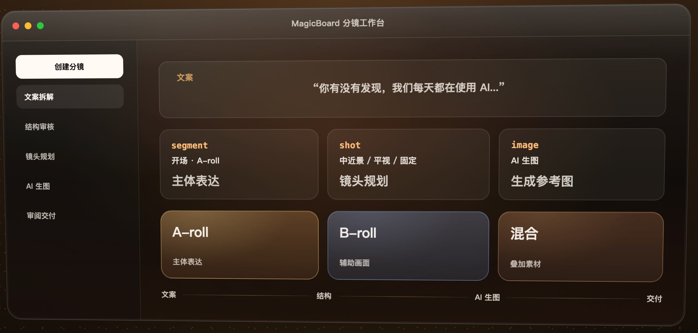
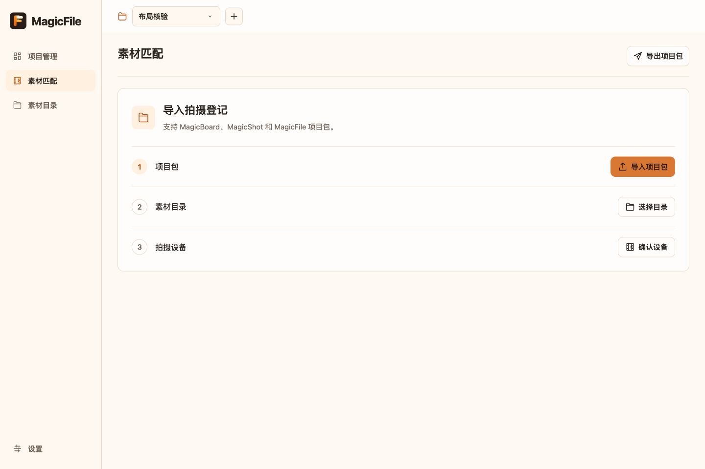

MagicBoard
先把故事，变成可拍的镜头。
拆解文案、规划 A/B-roll、制作 AI 参考图，整理导演审阅稿与拍摄执行表。

macOS · 分镜规划获取 MagicBoard
从你需要的那一步开始。
选择一款工具，也可以组合使用。
先把故事，变成可拍的镜头。
拆解文案、规划 A/B-roll、制作 AI 参考图，整理导演审阅稿与拍摄执行表。

把注意力，留给拍摄现场。
在微信中登记镜号、相机文件名与 Take，记录拍摄状态和现场照片。
镜头、记录与现场照片，随手留存。
拍完之后，让素材各就其位。
对齐现场登记与相机素材，精确匹配文件，截取视频第一帧，生成图片回传包。

Magic 家族的下一块拼图。
产品介绍、使用说明与文件入口将在确认后补充，届时可在这里获取。
规划、记录、整理。
把上一阶段的成果，带到下一步。
从文案生成分镜，
导出现场拍摄计划。
接收拍摄计划，
在微信里记录现场 Take。
匹配相机素材与现场记录，
把首帧图片带回分镜。
项目包衔接各阶段，按需导出与导入。MagicResolve 的协作方式将随产品介绍补充。
获取已公开发布的版本。
版本、安装说明与历史更新都在这里。
正在读取版本信息…
MagicShot 将以微信小程序形式上线，目前暂未开放使用。
按自己的工作需要选择即可。MagicBoard 用于分镜规划，MagicFile 用于素材匹配；MagicShot 为微信小程序，目前即将上线。
当前公开下载的 MagicBoard 与 MagicFile 在 Mac 本地运行。这个官网提供产品介绍和下载，不存储你的项目或相机素材。
下载区展示公开版本，点击“安装与使用”查看对应产品说明，点击“版本记录”查看历史发布。替换应用或升级前，请按对应版本的安装指引操作。
MagicShot 仅以微信小程序形式提供，当前标注“即将上线”。正式上线后，这里会补充使用入口。